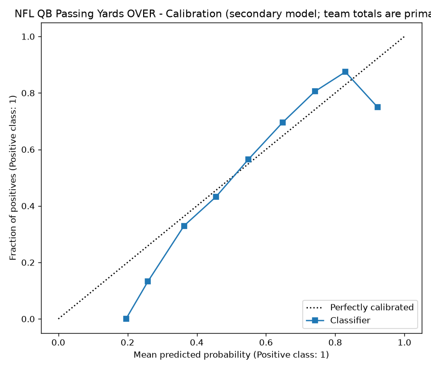

Generated 2026-09-13 17:56 UTC
Sample-size note: Backtest predictions at week N use games from multiple seasons. The live system only uses the current season. Early-season calibration will be worse than the chart below shows. Treat weeks 1-6 with caution.
The "Early-Season" columns restrict to predictions made with ≤5 prior games - closer to what the live system has access to early in a real season.
Brier score: 0.2157 (lower is better; 0 = perfect, 0.25 = no skill on a 50/50 task)
Log loss: 0.621 (lower is better)
Total predictions: 14095
Worst-calibrated bucket (full sample): 90-100% (-20.0% off, n=4)
Worst-calibrated bucket (early-season only): 20-30% (-25.0% off, n=15)

| Predicted Bucket | N | Actual Hit Rate | Predicted Midpoint | Delta | Early-Season N | Early-Season Actual | Early-Season Delta |
|---|---|---|---|---|---|---|---|
| 10-20% | 2 | 0.0% | 15.0% | -15.0% | — | — | — |
| 20-30% | 181 | 13.3% | 25.0% | -11.7% | 15 | 0.0% | -25.0% |
| 30-40% | 1275 | 33.0% | 35.0% | -2.0% | 222 | 23.0% | -12.0% |
| 40-50% | 2967 | 43.1% | 45.0% | -1.9% | 368 | 44.3% | -0.7% |
| 50-60% | 3720 | 56.6% | 55.0% | +1.6% | 538 | 65.4% | +10.4% |
| 60-70% | 3321 | 69.6% | 65.0% | +4.6% | 297 | 65.3% | +0.3% |
| 70-80% | 2195 | 80.5% | 75.0% | +5.5% | 178 | 71.3% | -3.7% |
| 80-90% | 430 | 87.4% | 85.0% | +2.4% | 47 | 74.5% | -10.5% |
| 90-100% | 4 | 75.0% | 95.0% | -20.0% | — | — | — |